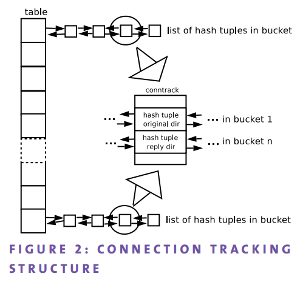

struct hashmap_entry {
const void *key;
void *value;
struct hashmap_entry *next;
};
struct hashmap {
hashmap_hash_fn hash_fn;
hashmap_equal_fn equal_fn;
void *ctx;
struct hashmap_entry **buckets;
size_t cap;
size_t cap_bits;
size_t sz;
};
struct hashmap_entry ** 表示一个指向“成员类型是 struct hashmap_entry* 的动态数组”的指针.

操作的实现看起来和 C++ 的标准库的实现（比如 libcxx)很像
1,2,3,4 都调用了 hashmap__insert
hashmap__insert 的逻辑：
new_cap_bits = map->cap_bits + 1;
if (new_cap_bits < HASHMAP_MIN_CAP_BITS)
new_cap_bits = HASHMAP_MIN_CAP_BITS;
new_cap = 1UL << new_cap_bits;
/// cap_bits 字段记录 2 的 几次方
查找：
/// 入参为 map 和 key, 出参为 value, void* 表示泛型
bool hashmap__find(const struct hashmap *map, const void *key, void **value)
{
struct hashmap_entry *entry;
size_t h;
// 通过 hash_fn 找到 bucket 的索引
h = hash_bits(map->hash_fn(key, map->ctx), map->cap_bits);
/// 参考 https://elixir.bootlin.com/linux/latest/source/tools/lib/bpf/hashmap.c#L128
/// &map->buckets[hash] 返回索引为 hash 的 struct hashmap_entry, which 是一个单向链表
/// 遍历链表的每一个成员, 用 equal_fn 函数（用户自定义）来比较 key, 如果匹配就写入 value
if (!hashmap_find_entry(map, key, h, NULL, &entry))
return false;
if (value)
*value = entry->value;
return true;
}
扩容之后, 模的操作数（即容量）已经改变, 原本位置为 i 的节点现在位置无法预测
hash = N * M + i
hash = 2N * K + new_i
new_i = i + N * (M - 2K)
加上注释
static int hashmap_grow(struct hashmap *map)
{
struct hashmap_entry **new_buckets;
struct hashmap_entry *cur, *tmp;
size_t new_cap_bits, new_cap;
size_t h, bkt;
new_cap_bits = map->cap_bits + 1;
if (new_cap_bits < HASHMAP_MIN_CAP_BITS)
new_cap_bits = HASHMAP_MIN_CAP_BITS;
/// 2 倍增长
new_cap = 1UL << new_cap_bits;
/// 分配新索引数组
new_buckets = calloc(new_cap, sizeof(new_buckets[0]));
if (!new_buckets)
return -ENOMEM;
/// 遍历原来哈系表中的所有 hashmap_entry, 包括不同索引的项
hashmap__for_each_entry_safe(map, cur, tmp, bkt) {
/// 根据每个 hashmap_entry 的 key 字段重新算出新索引
h = hash_bits(map->hash_fn(cur->key, map->ctx), new_cap_bits);
/// curr 表示一个项, 将它加到索引位置的节点上
/// 放在索引节点的下一个位置, 复杂度 O(1)
hashmap_add_entry(&new_buckets[h], cur);
}
map->cap = new_cap;
map->cap_bits = new_cap_bits;
/// 释放旧内存
free(map->buckets);
/// 替换索引数组
map->buckets = new_buckets;
return 0;
}
所以内核里面的哈系表扩容的时候实际上是将旧索引数组一次性迁徙到新索引数组, 复杂度 O(N)
复杂度不可能小于 O(N), 因为有 N 个节点要调整, 那么优化空间就在 rehash 过程, 要看已经算好的哈系是否能重复利用.
因为容易看出, hash % 容量1 和 hash % 容量 2 的共同点是 hash, 除非哈系函数将容量也作为计算因素, 否则是不需要重新计算的.
h = hash_bits(map->hash_fn(key, map->ctx), map->cap_bits);
...
static inline size_t hash_bits(size_t h, int bits)
{
/* shuffle bits and return requested number of upper bits */
return (h * 11400714819323198485llu) >> (__WORDSIZE - bits);
}
不幸的是, hash_fn 确实将容量(cap_bits 表示 2 的多少次方)作为计算因素.
据说 JDK1.8 做了优化[2], newIndex = index + oldCap, 具体实现这里就先不展开了(TODO).
tools/lib/bpf/hashmap.h 定义的是一个 Generic non-thread safe hash map, 所以使用的时候需要自己加锁.
比如, xt_hashlimit 里面用旋转锁去同步每个索引节点的读写, 不过这里用的并不是 tools/lib/bpf/hashmap.h
struct xt_hashlimit_htable {
...
/* used internally */
spinlock_t lock; /* lock for list_head */
...
struct hlist_head hash[]; /* hashtable itself */
};